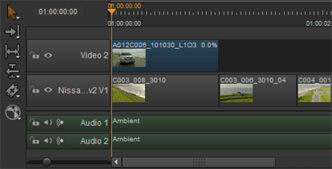

冻结帧功能使您能够使用单个帧创建任意长度的剪辑实例。为了实现这一点，应用程序接受剪辑实例的第一帧，并应用 0% 重定时，这是可逆的，通过应用 100% 重定时。
要冻结帧剪辑实例:
| 1。 | 选择时间轴上的目标项目。 |
| 2. | 右键单击项目并选择 编辑 > 制作冻结框架 , |
OR
导航到 时间线 > 使 冻结 框架 .
注意: 还可以使用电子表格重定时模式创建冻结帧来修改 Src Dur 到 0，或使 Src 在 和 Src Out 平等。
| 3. | 选择重新计时到 0%，并在时间线上标蓝色，以便于识别。 |

| 4. | 使用 多工具 或 滑夹 从可用范围设置冻结帧。 |
| 5. | 拖了产品的剪辑点，使用 多工具 或 移动/修剪 根据需要，设置剪辑实例的长度。冻结帧剪辑实例的长度没有上限。 |
|
|